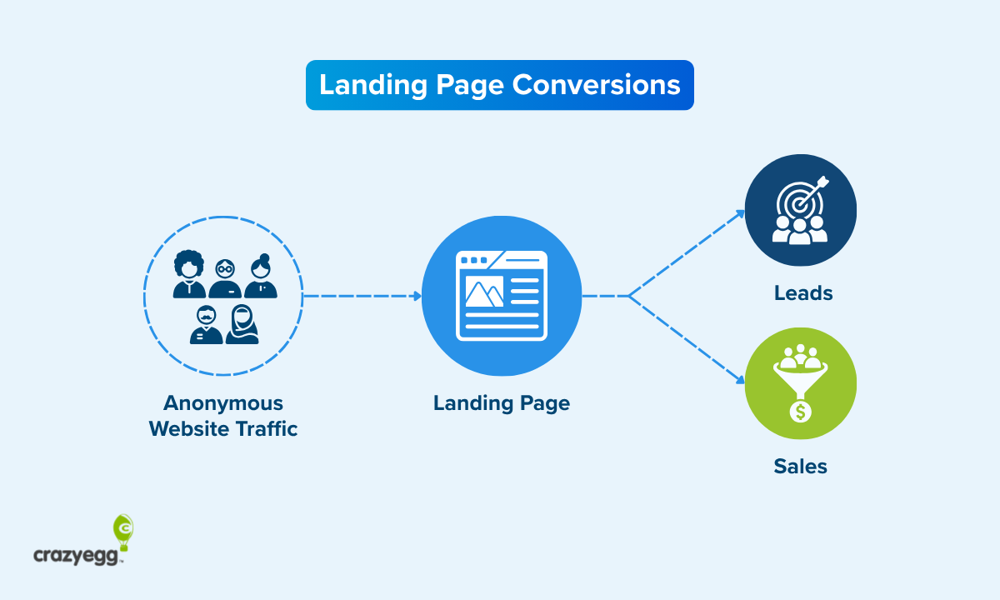
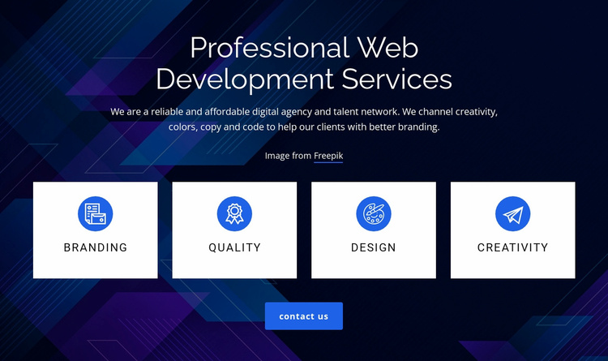
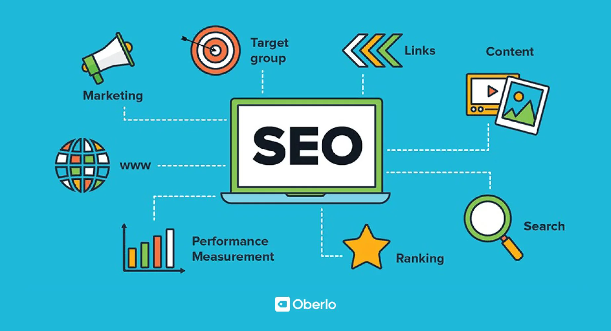

Hello, I'm
FARRUKH AHMED SHAIKH

Creative Web Developer • UI/UX Designer • Freelancer
About Me
My name is Farrukh Ahmed Shaikh. I am a passionate and dedicated Web Developer. I specialize in creating modern, responsive, and user-friendly websites. I love turning ideas into real digital experiences. My goal is to build websites that are both beautiful and functional. I have strong skills in HTML, CSS, and JavaScript. I also work with modern frameworks and design tools. I enjoy learning new technologies and improving my coding skills every day. Web development is not just my profession, it is my passion. I focus on writing clean and well-structured code. I always try to follow best practices in development. My websites are fully responsive for all devices. I make sure every project is fast and optimized. I believe in continuous learning and improvement. Technology is always evolving, and I evolve with it. I like solving problems and building creative solutions. I enjoy working on both front-end and back-end development. I have worked on several personal and practice projects. Each project helped me improve my skills and confidence. I always aim to deliver high-quality results. Client satisfaction is very important for me. I can design landing pages, portfolios, and business websites. I also build interactive and dynamic web applications. I pay attention to details like UI/UX design. A good user experience is always my priority. I am a quick learner and self-motivated developer. I can work independently or as part of a team. I enjoy challenging tasks that improve my skills. I am always open to new opportunities. My goal is to become a professional full-stack developer. I want to work on large-scale and impactful projects. I am continuously improving my problem-solving abilities. I believe consistency is the key to success. I always stay updated with modern web trends. I follow clean design principles and modern layouts. I enjoy creating simple yet powerful websites. I focus on performance, speed, and usability. I am currently improving my advanced JavaScript skills. I am also learning backend technologies step by step. My dream is to work in a top IT company or as a freelancer. I want to help businesses grow through digital solutions. Every day I practice coding to become better than yesterday. I believe hard work and dedication always pay off. I never stop learning new things in web development. Thank you for visiting my portfolio. --- If you want, I can also: * 🔥 Make it more “luxury / agency style” * 💼 Turn it into a beautiful website section (with design) * 🌐 Add skills bars + animations * 🧠 Make full CV/resume for you Just tell me 👍 .
Projects
Portfolio Website

Modern responsive personal portfolio design.
E-Commerce Store

Full-featured online shopping platform UI.
Business Landing Page

High conversion landing page for startup.
Services
Web Development

Modern responsive websites with clean code.
UI/UX Design
Beautiful and user-friendly interface design.
SEO Optimization

Improve ranking and website performance.
Client Feedback
Working with Farrukh Ahmed Shaikh was an excellent experience.
He designed a clean and modern UI for our website that perfectly matched our brand identity.
The user experience is smooth, and navigation is very intuitive.
He understood our requirements clearly and delivered everything on time.
Highly recommended for any UI/UX or web development work.
- Client A
Farrukh is a very skilled web developer with strong UI/UX sense.
He built our website with great attention to detail and performance.
The design is responsive, fast, and visually appealing on all devices.
He is professional, cooperative, and always open to feedback.
We are fully satisfied with his work and would definitely hire him again.